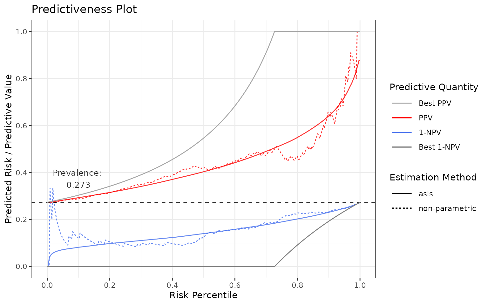
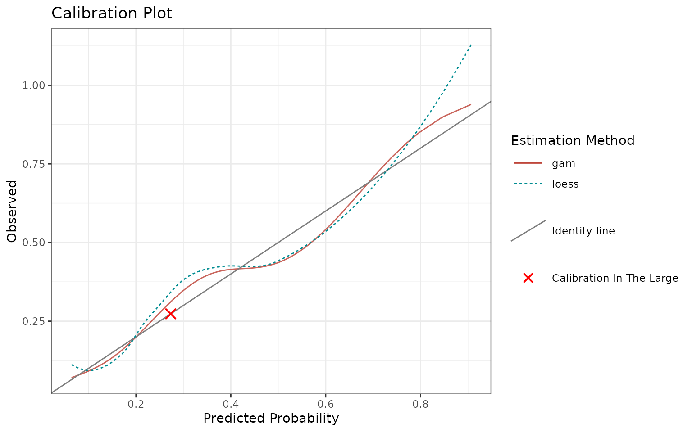
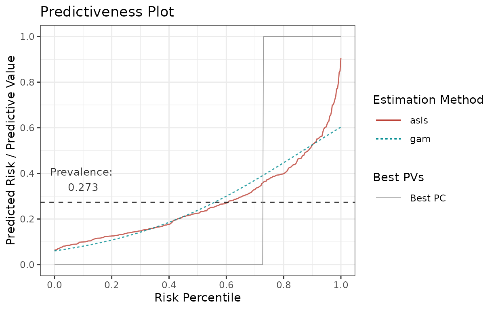

stats4phc
stats4phc.RmdIntroduction to stats4phc
This package provides functions for performance evaluation for the prognostic value of predictive models when the outcomes of interest are binary. We will describe 3 aspects that support such a performance evaluation:
- Predictiveness curves
- Calibration
- Sensitivity and specificity
The intention is not to replace standard metrics evaluation (like Brier score, log-loss, or AUC). On the contrary, the mentioned quantities should be checked in addition in order to get the overall sense of model behaviour.
Terminology
To begin with, let’s align on terminology. Below we define the terms that will be used across the article:
outcome: the true observation of the quantity of interest;
-
score / risk:
either a raw value (e.g. a biomarker) for the purpose of measuring (or approximating) the outcome,
or a probability given by a predictive model, where the outcome was modeled as the response;
estimate: output of a statistical methodology, where score is used as independent variable and outcome as a dependent variable.
Let’s now load the package and the example data.
library(stats4phc)
# Read in example data
auroc <- read.csv(system.file("extdata", "sample.csv", package = "stats4phc"))
rscore <- auroc$predicted_calibrated # vector of already calibrated model probabilities
truth <- as.numeric(auroc$actual) # vector of 0s or 1sPredictiveness curves
Predictiveness curves are an insightful visualization to assess the inherent ability of prognostic models to provide predictions to individual patients. Cumulative versions of predictiveness curves represent positive predictive values (PPV) and 1 - negative predictive values (1 - NPV) and are also informative if the eventual goal is to use a cutoff for clinical decision making.
You can use riskProfile function to visualize and assess
all these quantities.
Note that method “asis” (below on the graphs) means that the score (or model probabilities in our case) are taken as is, i.e. there is no estimation or smoothing.
Predictiveness curve
Let’s start with predictiveness curve:
p <- riskProfile(outcome = truth, score = rscore, include = "PC")
p$plotIdeally, all subjects in the population that have the condition
(=> prevalence) are marked as having the condition (predicted risk =
1) and all subjects without the condition (=> 1 - prevalence) are
marked as not having the condition (predicted risk = 0). This implies
that the ideal predictiveness curve is 0 for all subjects not having the
condition, and then it steps (jumps) at 1 - prevalence to 1
for all the subjects having the condition (see the gray line).
In reality, the curves are not step functions. The more flat the curves get, the less discrimination, and therefore utility, there is in the model.
One can also investigate the tails of predictiveness curve. The model is more useful if these regions have very low or very high predicted risks relatively to the rest of the data.
Positive / Negative predictive values
Now let’s plot PPV and 1-NPV:
p <- riskProfile(outcome = truth, score = rscore, include = c("PPV", "1-NPV"))
p$plot
Again, in an ideal case, they both are as close to the gray lines as possible.
In an ideal scenario:
in terms of PPV: If all the subjects with the condition are predicted perfectly, then PPV = TP / PP = 1 (TP = true positive, PP = predicted positive). Hence, all the subjects with the condition must be higher than
1 - prevalenceon the prediction percentile for PPV = 1.in terms of 1-NPV: If all the subjects without the condition are predicted perfectly, then NPV = TN / PN = 1 (TN = true negative, PN = predicted negative). Hence, all the subjects without the condition must be lower than
1 - prevalenceon the risk percentile for 1-NPV = 0.
Output settings
Note that:
most importantly, in case of a biomarker or if the model probabilities are not calibrated well, you can use a smoother, see
methodsargument and the last section of the vignette.the prevalence can be adjusted by setting it in
prev.adj.you can also plot “NPV” by adjusting the
includeparameter.you can also access the underlying data:
p <- riskProfile(outcome = truth, score = rscore, include = c("PPV", "1-NPV"))
head(p$data)## # A tibble: 6 × 7
## method pv percentile score estimate outcome pvValue
## <chr> <chr> <dbl> <dbl> <dbl> <dbl> <dbl>
## 1 asis NPV 0 NA NA NA 1
## 2 asis NPV 0.00300 0.0640 0.0640 0 1
## 3 asis NPV 0.00601 0.0654 0.0654 0 0.968
## 4 asis NPV 0.00901 0.0659 0.0659 1 0.957
## 5 asis NPV 0.0120 0.0702 0.0702 0 0.950
## 6 asis NPV 0.0150 0.0709 0.0709 0 0.946Calibration
Calibration is the assessment of systematic bias in a score. Visually, when plotting score on the x-axis vs. outcomes on the y-axis, the model is calibrated if points are centered around the identity line. If it is not the case, we talk about miscalibration (see reference). By improving calibration, one can improve the performance of the model.
You can use calibrationProfile function to visualize and
assess calibration.
p <- calibrationProfile(outcome = truth, score = rscore)
p$plot
In an ideal scenario, the fitted curves should be identical with the identity line.
In reality, the closer they are to the identity line, the better.
Note that you can also quantify calibration through discrimination and miscalibration index, see this blog post and modsculpt R package (metrics functions).
Output settings
Note that:
in case of a biomarker or if the model probabilities are not calibrated well, you can use a smoother, see
methodsargument and the last section of the vignette. In this case,"asis"is not allowed.-
use
includeargument to specify what additional quantities to show:"loess": Adds non-parametric Loess fit."citl": Adds “Calibration in the Large”, an overall mean of outcome and score."rug": Adds “rug”, i.e. ticks on x-axis showing the individual data points (top axis shows score for outcome == 1, bottom axis shows score for outcome == 0)."datapoints": Similar to rug, just shows jittered points instead of ticks.
use
margin.typeto add a marginal plot throughggExtra::ggMarginal. You can select one ofc("density", "histogram", "boxplot", "violin", "densigram"). It adds the selected 1d graph on top of the calibrtion plot and is suitable for investigating the score.you can again access the underlying data with
p$data.
Sensitivity and specificity
Ultimately, we provide a sensitivity and specificity plot as a function of score (threshold is data-driven). This graph may inform you of the best suitable cutoff for your model, although we usually recommend to output the whole score range, not just the binary decisions.
You can use sensSpec function to visualize and assess
sensitivity and specificity.
p <- sensSpec(outcome = truth, score = rscore)
p$plotAgain, the ideal scenario would be having a model following the gray lines. Since there is a trade-off between sensitivity and specificity, the graph may guide you which threshold (or thresholds) to choose, depending if one is more important than the other.
Adjusting the graphs
All the functions return the ggplot object under the
$plot element so you can further adjust it by adding more
layers. There is a risk that you might overwrite one of the previous
layers, so please double check your results.
For example, if you want to use the following graph
p <- riskProfile(
outcome = truth,
score = rscore,
methods = c("asis", "gam"),
include = "PC"
)
p$plot
for your publication with some minor adjustments, here is how you can change colours and line types:
library(ggplot2)
p$plot +
# change the colours to blue for "gam" and darkgreen for "asis"
scale_colour_manual(values = c("gam" = "blue", "asis" = "darkgreen")) +
# change the linetypes to solid for both
scale_linetype_manual(values = c("gam" = "solid", "asis" = "solid"))## Scale for colour is already present.
## Adding another scale for colour, which will replace the existing scale.Otherwise, you can use the $data element to construct
your own graph as well.
Estimations in stats4phc
For all the plotting functions from this package, there is a
possibility to define an estimation function, which will be applied on
the given score. In calibrationProfile, this serves as a
calibration curve. In riskProfile, this smooths the given
score. All of this is always driven by the methods
argument, which is available in each of the plotting functions.
There are couple of predefined estimation methods:
## [1] "asis" "binned" "cgam" "gam" "mspline" "pava"Users can also define their own estimation function if needed.
Predefined estimation functions
The predefined estimation functions can be given as a character, in which case the default values of the estimation function arguments will be used, or as a list, in which case you can change the parameters of the estimation.
The character vector approach, using the default parameter values, is as follows:
methods = c("gam", "cgam")To see the possible arguments and their defaults, look into the
estimation function documentation, which is always available as
getXest, where X stands for the estimation
function (e.g. getCGAMest). Here is the list of all:
## [1] "getASISest" "getBINNEDest" "getCGAMest" "getGAMest"
## [5] "getMSPLINEest" "getPAVAest"For example, by running ?getGAMest, we see that
"gam" sets k, the number of knots, to
-1, which refers to automatic selection.
Otherwise, you can specify the estimation methods as a list, in which case you can change the argument values, e.g.:
methods = list(
gam3 = list(method = "gam", k = 3),
gam5 = list(method = "gam", k = 5),
cgam = list(method = "cgam", numknots = 0) # automatic knot selection
)Note that all the list elements must be (uniquely) named, both inner
and outer lists, and there always needs to be an
element "method", which specifies the estimation
function.
By default, "gam", "cgam", and
"mspline" always fit on percentiles. If you want to change
this, you need to specify it through an argument fitonPerc,
such as:
Finally, method "asis" is a specific “estimation
method”, which takes the input “as is”, it does not perform any
estimation. It is listed here for consistency. You can use this method
in case you want to assess your score without any adjustments.
User-defined estimation functions
You can also define your own estimation function. To do so, define a function which:
takes exactly these 2 arguments:
outcomeandscore.performs the estimation of your choice, based on
outcomeandscore.returns a
data.frameof exactly these 4 columns:score,percentile(percentile ofscore),outcome, andestimate(result of your estimation).
Here is an example:
# User-defined estimation function - logistic regression
# Function needs to take exactly these two arguments
my_logistic <- function(outcome, score) {
# Calculate percentiles
perc <- ecdf(score)(score)
# Fit logistic regression on percentiles
m <- glm(outcome ~ perc, family = "binomial")
# Generate predictions
preds <- predict(m, type = "response")
# Return a data.frame with these 4 columns
return(
data.frame(
score = score,
percentile = perc,
outcome = outcome,
estimate = preds
)
)
}
# Then provide it to the `methods` argument as a named list
methods = list(my_logistic = my_logistic)Note that you can also combine user-defined functions with already predefined functions, e.g.:
Hint: if you cannot get your function to work correctly, use
browser() in your function to interactively debug it in
order to see what’s wrong.